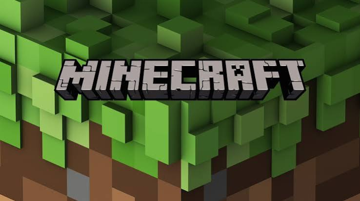

Você sempre adorou jogar Minecraft e sonhava em viver nesse mundo de blocos. Agora que você está dentro dele, o objetivo é simples: coletar recursos e evoluir. Siga as linhas do fluxograma, faça as escolhas certas na ordem certa e monte o seu caminho até o portal do Nether. Divirta-se criando a sua própria jornada!
Você decide vasculhar o chão, mas sem ferramentas só encontra terra e sementes. O sol começa a pôr-se e ouve-se um gemido de zombie ao longe! O que faz?
Boa escolha! Com a madeira, você cria uma Bancada de Trabalho (Crafting Table) e as suas primeiras ferramentas de madeira. O dia está a acabar. Qual o próximo passo?
Você passa a noite escura e fria em segurança/escondido. Sobreviveu! O amanhecer chegou.
Excelente! Na caverna, você coleta pedra, evolui para ferramentas de pedra e encontra minério de Ferro! Para avançar, precisa derreter o ferro numa fornalha. O que faz a seguir?
Nas profundezas do mundo, você encontra 3 Diamantes cintilantes! Cria a lendária Picareta de Diamante. Agora você pode minerar blocos de Obsidian (Obsidiana) para o portal. Onde vai procurar a Obsidian?
Estratégia de mestre! Com o balde de água e a lava, você consegue moldar o Portal do Nether bloco a bloco sem precisar de diamantes. Só falta acender o portal!
Sucesso! Você jogou a água na lava, gerou a Obsidian e minerou os 10 blocos necessários com a sua picareta de diamante. Você monta a estrutura do portal. Só falta ligá-lo!
GAME OVER: Ao entrar na ravina escura sem tochas, um Creeper caiu do teto e explodiu logo atrás de você! Você perdeu todos os seus itens.
PARABÉNS! As chamas roxas acendem-se e o som do portal ecoa. Você atravessa o limite entre os mundos e alcança o Nether com sucesso! A sua aventura está apenas a começar.